Хвойные породы
Сосна, ель, лиственница, пихта и кедр. Для бруса предусмотрены сорта с 1-го по 4-й.
Доска, брус, лиственные заготовки, шпалы и палеты.
Смотреть ассортимент19 позиций
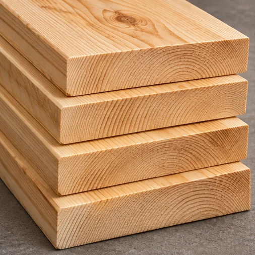
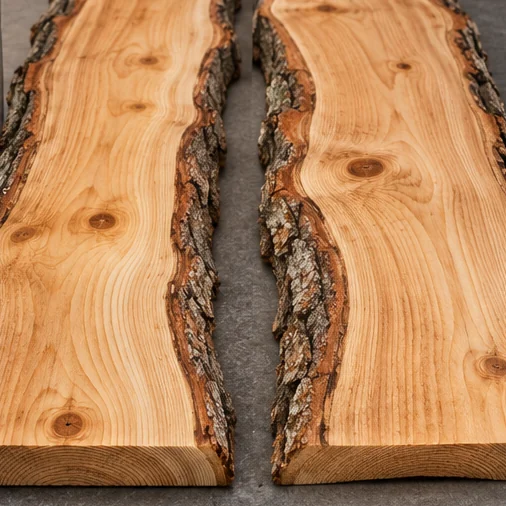
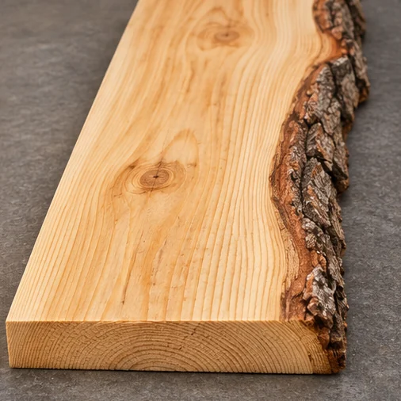

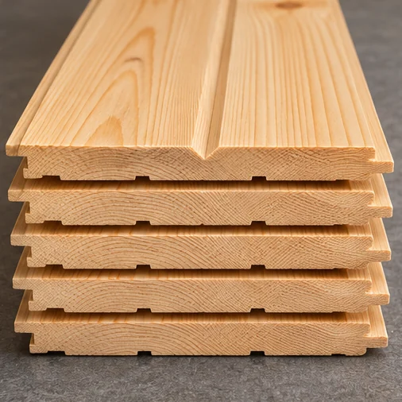
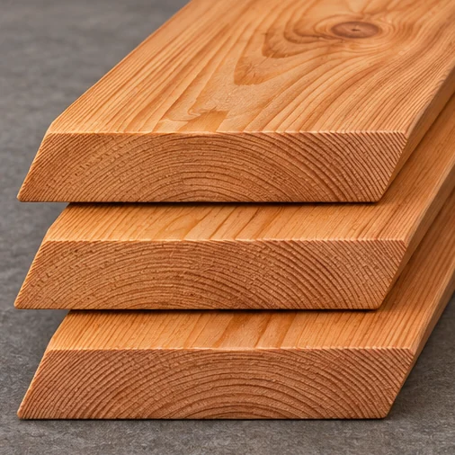
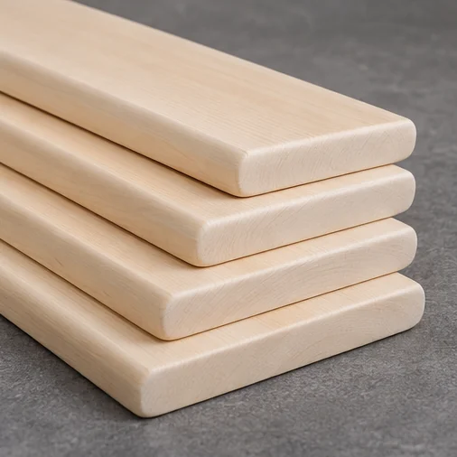
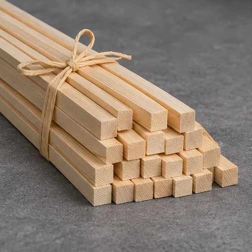
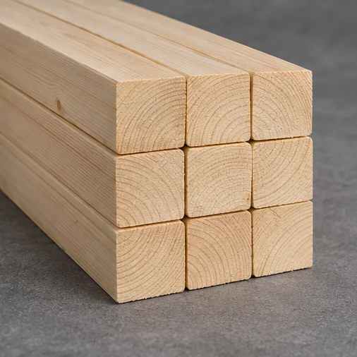
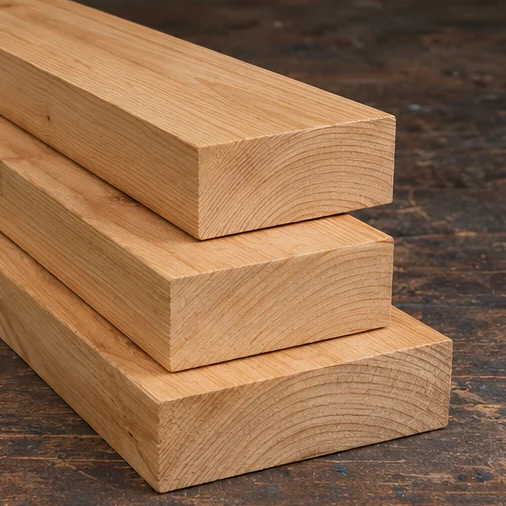
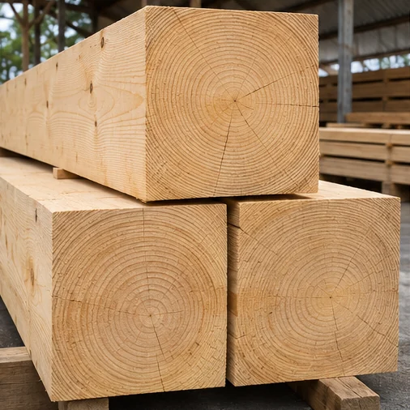
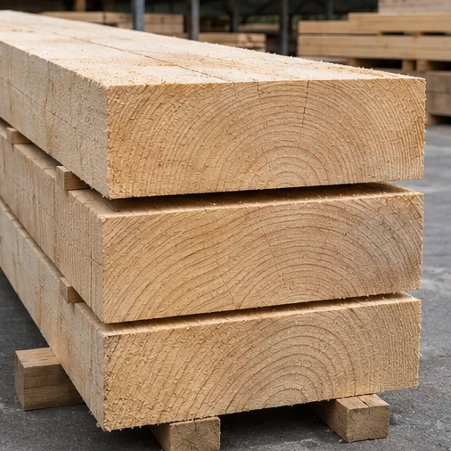
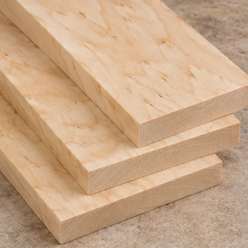
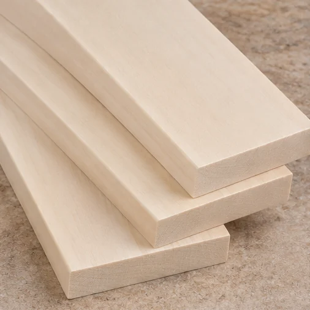
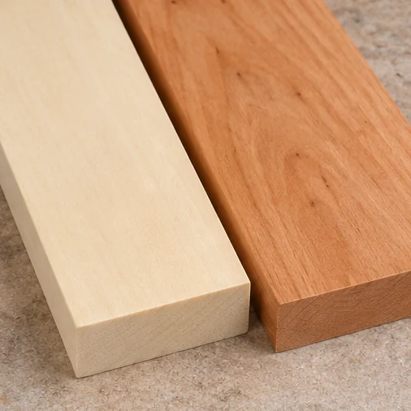
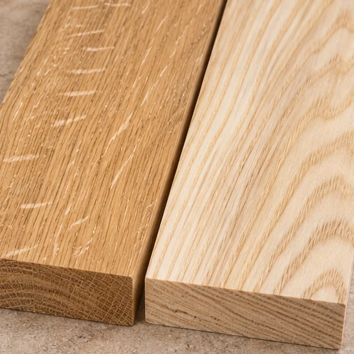
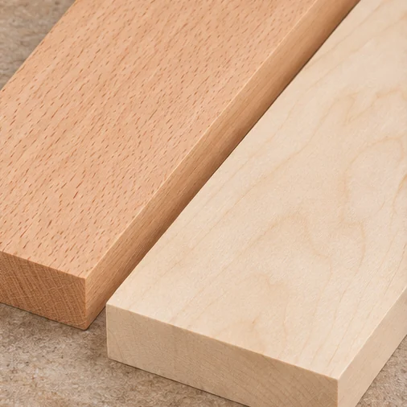
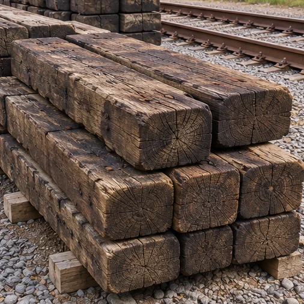
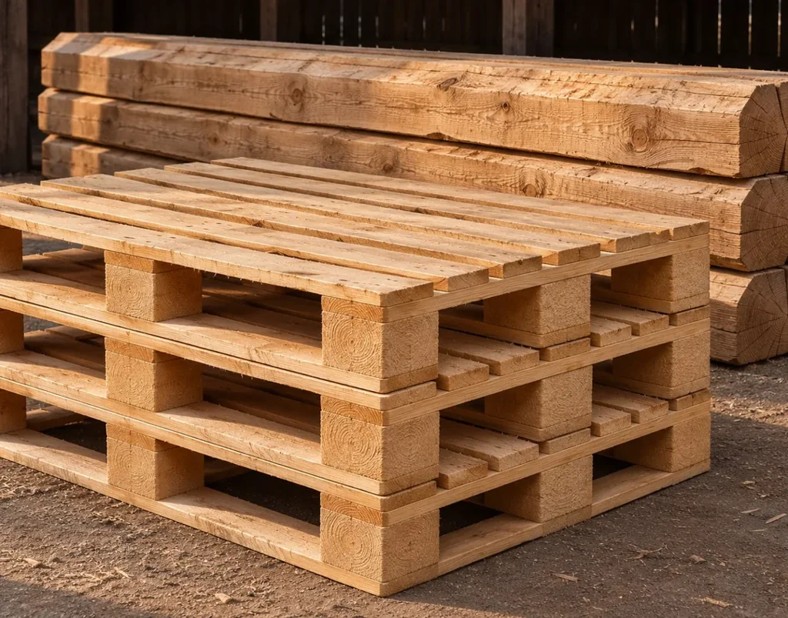
Доска с двумя пропиленными кромками для каркасов, настилов, опалубки и тары.
При заказе согласуют ширину и допустимый обзол.
При заказе согласуют ширину и допустимый обзол.
Шпунтованная доскаДоска и профилиПрофилирование выполняется по требованиям к сечению детали.
Профилирование выполняется по требованиям к сечению детали.
Профилирование выполняется по требованиям к сечению детали.
Профилирование выполняется по требованиям к сечению детали.
Для обрешётки, реек, каркасов и упаковки.
Для обрешётки, реек, каркасов и упаковки.
Для обрешётки, реек, каркасов и упаковки.
Размер, обработка и объём партии задаются в спецификации.
Размер, обработка и объём партии задаются в спецификации.
Порода, сорт и объём подтверждаются при расчёте партии.
Порода, сорт и объём подтверждаются при расчёте партии.
Порода, сорт и объём подтверждаются при расчёте партии.
Порода, сорт и объём подтверждаются при расчёте партии.
Порода, сорт и объём подтверждаются при расчёте партии.
Требования к пропитке согласуются при расчёте партии.
Для нестандартного поддона требуется эскиз.
По этому запросу позиций нет.
| Изделие | Сечения и исполнение |
|---|---|
| Доска | Обрезная, необрезная и односторонне обрезная. Пиленая или строганая. |
| Брусок | Например, 20 × 30, 30 × 50, 50 × 50 и 50 × 100 мм. |
| Брус | Например, 100 × 100, 150 × 150, 200 × 200 и 250 × 250 мм. |
В спецификации партии указываются порода, сорт, сечение, длина, влажность и обработка поверхности.
Сосна, ель, лиственница, пихта и кедр. Для бруса предусмотрены сорта с 1-го по 4-й.
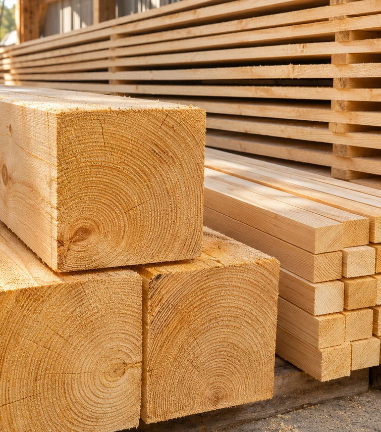
Берёза и осина для доски, брусков и заготовок. Липа, ольха, дуб, ясень, бук и клён — по запросу.
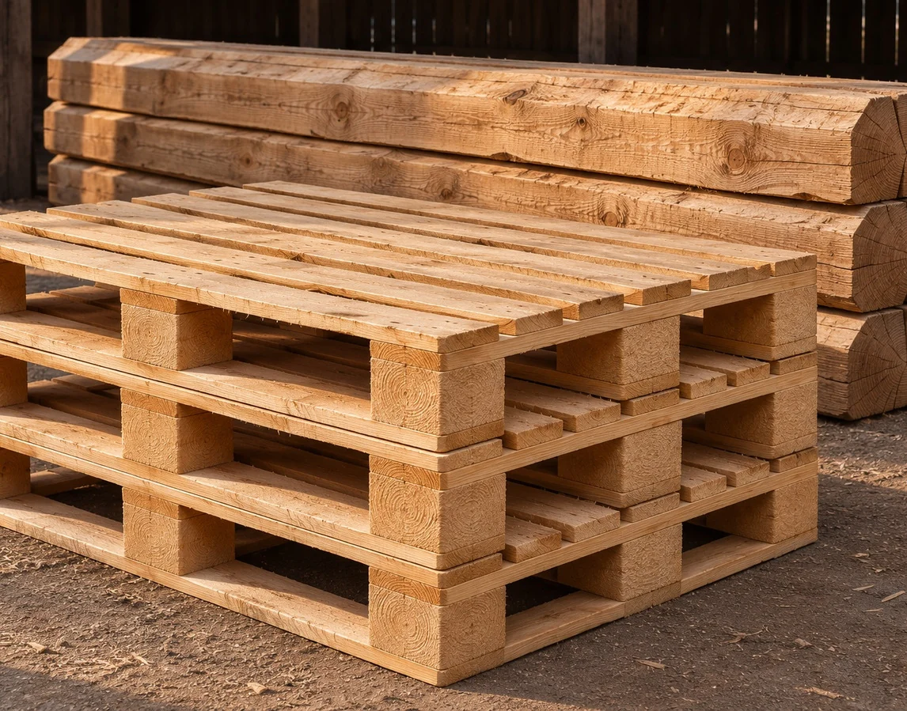
Размеры шпал и требования к пропитке согласуются по спецификации. Для палет учитываются конструкция и нагрузка.